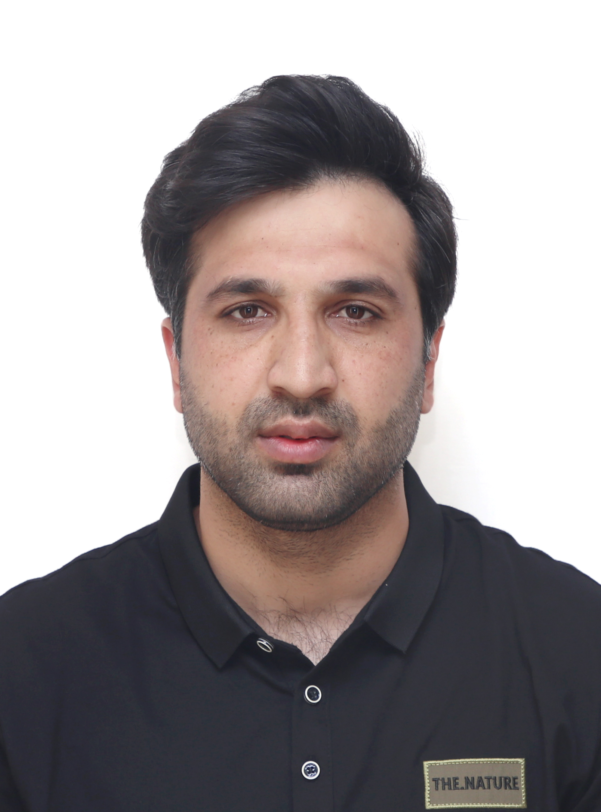

PhD Researcher · Computer Science and Technology
University of Science and Technology of China (USTC)
Hefei, Anhui, China
I am a self-motivated PhD researcher in Computer Science and Technology, with research focused on cybersecurity, IoT security, intrusion detection systems, and the integration of Machine Learning and Deep Learning techniques to strengthen modern security frameworks.
My work addresses emerging challenges in network security — including anomaly detection, threat mitigation, and secure communication protocols — in highly connected environments such as the Internet of Things (IoT). I am passionate about developing scalable, adaptive security solutions that ensure data integrity, privacy, and protection against evolving cyberattacks.
AI-based intrusion detection systems for industrial control systems and IoT networks, leveraging big data analytics and ML/DL models.
Threat detection in Internet of Medical Things, lightweight cryptography, and secure communication for resource-constrained devices.
Protecting critical infrastructure against cyberattacks, including industrial IoT, SCADA systems, and self-driving vehicles.
Federated learning, zero-trust architectures, and privacy-preserving frameworks for IoT and cloud computing environments.
Reverse engineering and formal verification of secure messaging protocols using Tamarin Prover and CryptoVerif.
Explainable learning machines for protecting IIoT-enabled industrial control systems against cyber-attacks.
University of Science and Technology of China (USTC), Hefei, China
Research focus: Cybersecurity, IoT security, intrusion detection, and formal verification of secure messaging protocols.
Nanjing University of Aeronautics and Astronautics (NUAA), Nanjing, China
Thesis: "Research on multi-class imbalance problem to detect cyber-attacks in industrial control systems." Fully funded by Chinese Government Scholarship.
University of Malakand, KPK, Pakistan
Bachelor's thesis: "Online Shopping System." Comprehensive coursework in networks, databases, and software engineering.
Author of 10+ peer-reviewed papers in SCI-indexed journals, including IEEE Transactions, Elsevier Computer Networks, and Ad Hoc Networks. See my Google Scholar profile for the complete list.
Journal Reviewer for: Computing and Informatics · ICCK Transactions on Advanced Computing and Systems · IEEE Transactions on Consumer Electronics · Intelligent Journal System
Swat Collegiate College, Swat, KPK, Pakistan
Taught undergraduate courses in computer science and information technology, mentored students on programming and research projects.
Python client-server messaging application implementing RSA, Diffie-Hellman, and ElGamal cryptographic protocols — demonstrating foundational secure communication from the ground up.
Formal analysis of delivery integrity in server-mediated messaging systems, including CryptoVerif models, packet traces, and documentation. Currently under double-blind review.
Investigated multi-class imbalance problem to detect cyber-attacks in industrial control systems. Evaluated sampling methods and ML models for improved SCADA attack detection.